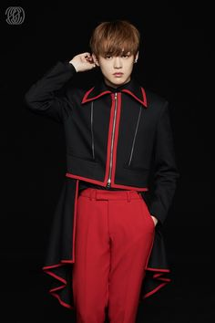

Johnny:
Johnny Nasceu em Chicago EUA em 1995, ele é um dos rappers do grupo e apesar de mostar performances sempre muito fortes ele é um dos integrantes mais fofos e carinhosos do grupo.
Yuta:
nasceu em Osaka no ano de 1995. foi o primeiro idol japonês da SM ent. e o seu apelido dado pelos membros é Osaka Prince.
Shohei:
faz parte do projeto "SM ROOKIE" e irá debutar em breve no NCT Tokyo, nasceu no Japão em 1995.
Doyoung:
nascido em 1996 ele é um dos vocais do grupo; sua data favorita do ano é o dia dos namorados.
Ten:
ele 1996 em Bangkok, Tailândia; ele é um dos ACE's do NCT sendo capaz de execultar com perfeição tudo que se propõe a fazer.
Jaehyun:
Jaehyun é um lutador faixa preta de taekwondo;ele é o visual do NCT 127; Ele é especialista em piano e nasceu em 1997.
WinWin:
WinWin também é 1997 e nasceu emWenZhou na China; por causa dos trabalhos na china ele quase não tem tempo comos membros sendo assim sempre que se juntam os membros fazem questão de demonstrarem todo o amor e carinho pelo mesmo e assim as Czennie passaram a falar que o Winwin é o Bias do NCT no NCT.
Jungwoo:
Woo nasceu em 1998; ele foi titulado como "o membro de feições adoravéis"; seu esporte favorito é arco e flecha.
Xiaojun:
nasceu em 1998 em Guangdong, China; ele é vocalista principal e o visual do WayV; Ele dorme com os olhos abertos, assim como o Winwin.
Lucas:
nasceu em Sha Tin, China em 1999; ele é poliglota podendo falar mandarim, cantonês, tailandês, inglês e coreano; Quando era trainee, queria ser integrante do NCT Dream, e ainda tem essa vontade mesmo sendo membro oficial do WayV.
Mark:
nasceu no Canadá em 1999;Os membros dizem que ele fala enquanto dorme. JaeHyun disse que Mark às vezes faz raps enquanto dorme, seja em inglês ou coreano.
Hendery:
nasceu em Macau na China em 1999; Hendery tem medo de sapos. ele fala mandarim, cantonês, inglês e coreano. Sua planta favorita é o cacto.
Renjun:
nasceu em março de 2000 na provincia de Jilin na China; Ele nasceu em Jilin, província da China que faz fronteira com a Coréia do Norte. Por causa do local de onde ele viveu, ele cresceu bilingue em coreano e mandarim. Ele também entende inglês muito bem.
Jeno:
Ele é um dos principais visuais do NCT; Ele sabe tocar muitos instrumentos, inclusive violino; Ele chegou a fazer comerciais ainda pequeno; Ele tem 3 gatos,um deles chama-se Bongsik, no qual foi encontrado na rua
Heechan:
Os membros dizem que ele é o membro com a personalidade mais fofa; Donghyuck possuí baixa visão de cores; O nome Haechan significa “Honesto e Radiante”; Quando membro do SMROOKIES, Haechan sempre se apresentava como o visual do grupo;
Jaemin:
Já foi um patinador de velocidade; O recorde de Jaemin em atletismo em 100 metros é 15 segundos; Antes de ser trainee, gostaria de ser médico; Seus companheiros o chamam de Nana.
YangYang:
nasceu em Taipei, Taiwan; Ele se mudou para a Alemanha com sua mãe e irmã quando tinha onze anos e morou lá por seis anos; Ele fala chinês, alemão, inglês, coreano e um pouco de espanhol; Ele não tem apelidos porque achavam que “YangYang” era seu apelido;
Shotaro:
ele nasceu em 2001 em Kanagawa, Japão Hobbies: Assistir Mukbangs, dançar e jogar basquete; Comidas favoritas: sushi, tango, bolo, sobremesas; Ele acredita que seu ponto forte é seu eye smile.
Sungchan:
A estação do ano favorita do Sungchan é o outono; Ele acredita que seu ponto forte (charme) é ser alto ;Sungchan acredita que os NCTzens ficarão felizes de o ver fazendo seu melhor.
Chenle:
nasceu em Xangai, China em 2001; Chenle foi exposto por seus membros que ele era o tipo de pessoa que cria desculpas por que ele perdeu um jogo; Ele fala mandarim enquanto dorme; Chenle é conhecido como “Dolphin” (golfinho) por causa de sua risada aguda e gritos.
Eunseok:
Seu modelo é Max Changmin de TVXQ; Ele está muito interessado em aulas de teatro e quer se tornar ator em 10 anos; Eunseok foi escalado quando estava a caminho da escola e recusou 4 vezes porque os casters não lhe disseram o nome da empresa, mas depois ele aceitou.
Jisung:
Ele gosta de jogar futebol; Ele odeia ostras e insetos; Ele acredita em alienígenas; Ele odeia sopa de algas marinhas; Ele dança desde os 8 anos de idade; É dançarino, cantor, ator e faz rap; Foi modelo infantil para diversas marcas.
SeungHan:
Ele diz que seu charme são as sobrancelhas escuras; Seunghan toca um pouco de piano, mas principalmente toca guitarra; Seus hobbies são passear e jogar FIFA Online.
NCT (엔시티) é um grupo masculino sul-coreano formado pela SM Entertainment em 2016. Seu nome é uma abreviação do projeto de localização Hallyu Neo Culture Technology, um termo dado pelo fundador da SM Lee Soo-man para descrever o conceito do grupo de ter um número ilimitado de membros divididos em várias subunidades baseadas em várias cidades do mundo. A primeira subunidade de seis membros do grupo NCT U, estreou em abril de 2016 com os singles "The 7th Sense" e "Without You". NCT 127, uma unidade baseada em Seul, estreou em julho de 2016 com o mini-álbum NCT #127. A terceira unit, NCT Dream, fez sua estreia em agosto de 2016, com o single "Chewing Gum". WayV, a quarta subunidade baseada na China, estreou em janeiro de 2019 com o extended play The Vision. A quinta subunidade deve estrear em 2021. O primeiro álbum de estúdio do grupo, intitulado NCT 2018 Empathy, foi lançado em 14 de março de 2018, como parte do projeto NCT 2018. Em maio de 2018, o NCT tornou-se o principal ato musical emergente nos EUA e marcou a primeira vez que um ato de K-pop liderou a lista.
NCT 127 (엔시티 127) sendo NCT um acrônimo para Neo Culture Technology e 127 marca a coordenada de longitude de Seul é a segunda subunidade oficial do grupo masculino sul-coreano NCT formado pela SM Entertainment. A subunidade estreou em julho de 2016, composta por sua formação original de sete membros: Taeil, Taeyong, Yuta, Jaehyun, Winwin, Mark e Haechan, com o lançamento de seu primeiro extended play NCT #127, que foi um sucesso comercial após o seu lançamento e ganhou várias indicações para a subunidade, e eventualmente ganhou o título de Melhor Novo Grupo em vários prêmios de música da Coreia do Sul em 2016. Os membros Doyoung e Johnny foram adicionados à subunidade em dezembro de 2016, antes de seu próximo EP Limitless em 2017. Jungwoo foi então apresentado como o décimo e último membro da subunidade em setembro de 2018, seguido pelo primeiro álbum de estúdio, Regular-Irregular, do grupo no final de outubro de 2018.
NCT Dream ( 엔시티 드림) é a terceira subunidade oficial do grupo masculino sul-coreano NCT formado pela SM Entertainment em 2016, com um sistema rotacional de membros sendo composta apenas por membros adolescentes, sendo posteriormente suspenso em 2020, quando os membros se tornaram adultos. A subunidade estreou em agosto de 2016 com o lançamento do single "Chewing Gum". O grupo consiste em sete membros: Mark, Renjun, Jeno, Haechan, Jaemin, Chenle e Jisung. O NCT Dream foi reconhecido internacionalmente como um dos artistas mais notáveis da adolescência de sua época, conhecido pela música que reflete o crescimento da juventude. A narrativa de suas faixas-título transmitiu pensamentos após diferentes estágios de desenvolvimento do adolescente, com transição da inocência para a rebelião e o crescimento. O sucesso comercial de seu EP de 2019, We Boom, transformou o NCT Dream em um dos 10 melhores vendedores físicos da Coreia do Sul em 2019 e ganhou o Bonsang Awards no 34º Golden Disc Awards e 29º Seoul Music Awards em 2020. Embora o NCT Dream tenha sido formado inicialmente para seguir um sistema de graduação e admissão com base na idades, no qual os membros deixariam a unit após atingirem a idade coreana de 20 anos (19 internacionalmente), em 2020 a SM Entertainment anunciou que o sistema de graduação e admissão havia sido removido, com o membro graduado anteriormente Mark retornando, e o NCT Dream continuando as atividades como um grupo de estilo flexível com os sete membros originais. Seu quarto EP coreano, intitulado Reload, foi lançado em abril de 2020 para marcar essa mudança em seu conceito. O NCT Dream é o primeiro e único artista asiático a aparecer três vezes consecutivas na lista "21 Under 21" da Billboard, em 2018, 2019 e 2020, nas posições 20, 13 e 19 respectivamente, escolhidos pelo impacto do setor nas vendas, streaming e mídia social. Em 2018, o NCT Dream foi incluído na lista dos "25 adolescentes mais influentes" do ano pela Time, destacando sua conexão entre adolescentes.
WayV ( 威神V) é um grupo masculino chinês, que serve como quarta subunidade oficial e subunidade chinesa do grupo masculino sul-coreano NCT. O grupo, composto por sete membros – Kun, Ten, Winwin, Lucas, Xiaojun, Hendery e Yangyang – teve sua estreia em janeiro de 2019 com o lançamento do single álbum The Vision. Eles ganharam o prêmio de Melhor Novo Artista Asiático no Mnet Asian Music Awards 2019. Em 2020, o grupo lançou seu primeiro álbum de estúdio, intitulado Awaken the World. Em 10 de março de 2021, o WayV lançou seu terceiro EP, Kick Back, com o single principal de mesmo nome. Após seu lançamento, Kick Back alcançou a posição de número um do iTunes em 25 países. Seguindo o sucesso de seu álbum anterior no Japão, Kick Back fez sua estreia nas paradas Oricon Albums Chart e Billboard Japan Hot Albums, ambas no número trinta e cinco, em seguida, atingiu o pico no gráfico da Oricon no número treze. O EP se tornou o primeiro álbum do grupo número um no Gaon Album Chart, além de vender mais de 220 mil cópias em seu primeiro mês. Em 21 de junho de 2021, foi anunciado que o WayV participaria da trilha sonora do drama chinês Falling Into Your Smile (你 微笑 时 很美) com a canção intitulada "Everytime", lançada em 23 de junho. Os membros do WayV participaram da promoção do terceiro álbum de estúdio do NCT, Universe, lançado em 14 de dezembro de 2021. O grupo gravou a música em inglês "Miracle" para o álbum. Lucas e Winwin não participaram do álbum, depois que Lucas foi suspenso de qualquer atividade promocional devido a controvérsia de gaslighting, e Winwin havia estabelecido um estúdio pessoal na China. WayV estava programado para lançar seu quarto EP, Phantom, em 9 de dezembro de 2022. No entanto, a Label V anunciou que o lançamento seria adiado após o falecimento do ex-presidente da China Jiang Zemin.[66] Em 8 de dezembro, o grupo confirmou que o EP seria lançado em 28 de dezembro. Composto por seis novas faixas e duas canções de subunidades lançadas anteriormente, é o primeiro álbum a apresentar o grupo como um sexteto.